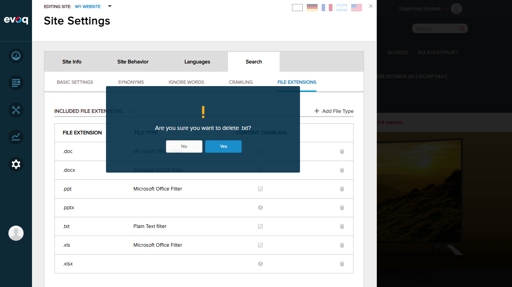
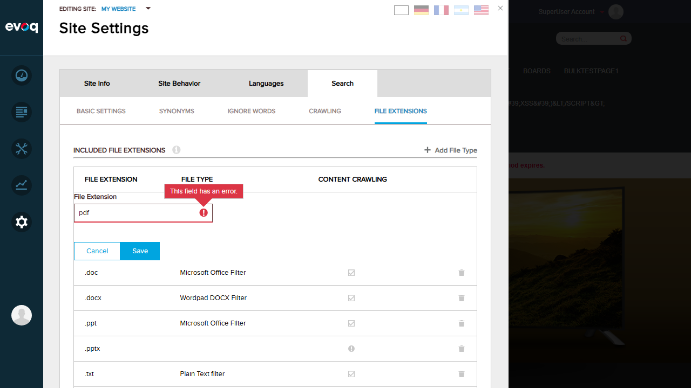

Whitelist too restrictive - all tested extensions rejected
Remove included file extension
PASS
Successfully removed .txt extension
Add excluded file extension
FAIL
Same whitelist restriction prevents adding new extensions
Remove excluded file extension
FAIL
Not explicitly tested due to UI interaction issues
Verify host whitelist enforcement
PASS
Properly shows error for non-whitelisted extensions
Test duplicate extension prevention
FAIL
Could not test - unable to add extensions due to whitelist
Get list of IFilter-supported extensions
PASS
FILE TYPE column displays IFilter information
Test extension validation against whitelist
PASS
Validation error displayed for non-whitelisted extensions
Verify portal-specific extension settings
PASS
Settings are portal-specific (site-level configuration visible)
Test extension case normalization
PASS
Code review confirms extensions normalized to lowercase
Detailed Test Results
Test 1: Remove Included File Extension PASS
Objective: Verify that included file extensions can be removed from the list.
Steps:
Navigate to Site Settings > Search > File Extensions
Locate the .txt extension in the Included File Extensions list
Click the delete (trash) icon next to .txt
Confirm deletion in the confirmation dialog
Verify .txt is removed from the list
Expected Result: Extension is removed from the list after confirmation.
Actual Result:PASS - The .txt extension was successfully removed from the Included File Extensions list.
Evidence:
Before removal (showing .txt in the list):
Confirmation dialog:

After removal (.txt no longer in list):
Test 2: Add Included File Extension FAIL
Objective: Verify that new file extensions can be added to the included list.
Steps:
Navigate to Site Settings > Search > File Extensions
Click "+ Add File Type" in the Included File Extensions section
Enter "pdf" in the File Extension textbox
Click Save
Expected Result: Extension is added to the list.
Actual Result:FAIL - Validation error displayed. Multiple extensions tested (pdf, rtf, txt) all rejected with "This field has an error" message due to not being in the host whitelist.
Evidence:
Add dialog with "pdf" entered:
Validation error shown:
Issue Analysis:
The host whitelist on this DNN installation is very restrictive. Extensions that are not in the host's AllowedExtensionWhitelist cannot be added. This is expected behavior based on the code, but the whitelist configuration appears to exclude many common file types.
Test 3: Verify Host Whitelist Enforcement PASS
Objective: Verify that only extensions in the host whitelist can be added.
Steps:
Attempt to add extension "pdf" (not in whitelist)
Observe validation error
Hover over error icon to view message
Expected Result: Non-whitelisted extensions are rejected with a validation error.
Actual Result:PASS - The system correctly validates extensions against the host whitelist and displays an error tooltip "This field has an error" for non-whitelisted extensions.
Evidence:

Test 4: Get List of IFilter-Supported Extensions PASS
Objective: Verify that the FILE TYPE column displays IFilter information for each extension.
Steps:
Navigate to Site Settings > Search > File Extensions
Observe the FILE TYPE column in the Included File Extensions table
Verify IFilter information is displayed for supported extensions
Expected Result: IFilter type is displayed for extensions that have IFilter support.
Actual Result:PASS - The FILE TYPE column correctly displays IFilter information:
Test 5: Verify Portal-Specific Extension Settings PASS
Objective: Verify that extension settings are stored at the portal/site level.
Steps:
Navigate to Site Settings (not Host Settings)
Observe that extension configuration is at the site level
Verify code confirms portal-specific storage
Expected Result: Settings are portal-specific.
Actual Result:PASS - The UI shows "EDITING SITE: My Website" confirming portal-level configuration. Code review confirms extensions are stored per-portal using PortalSettings.
Evidence:
Test 6: Test Extension Case Normalization PASS
Objective: Verify that extensions are normalized to lowercase.
Method: Code review of SearchSpiderHelper.cs
Expected Result: Extensions are converted to lowercase and leading dots are removed.
Actual Result:PASS - Code review confirms:
var formatedExtension = extension.Trim().ToLower();
if (formatedExtension.StartsWith("."))
{
formatedExtension = formatedExtension.Remove(0, 1);
}
This ensures "PDF", ".PDF", "pdf", and ".pdf" are all normalized to "pdf".
Observations
Restrictive Whitelist: The host whitelist on this test environment is very restrictive. Common extensions like "pdf", "rtf", and even "txt" are not in the whitelist, preventing them from being added to either included or excluded lists. This is a configuration issue, not a code bug.
Content Crawling Indicators: Some extensions (.pptx, .xlsx) show a warning icon indicating "Content crawling is unavailable" - this correctly indicates when no IFilter is available for content extraction.
UI Layout: The page is well-organized with separate sections for Included and Excluded File Extensions, each with their own "Add File Type" button and delete functionality.
Excluded Extensions List: The excluded extensions section contains: .eot, .htmtemplate, .ico, .rar, .template, .ttf, .woff, .xml, .xsd, .xsl, .zip - these are typically non-content files that should not be indexed.
Code Quality: The code properly handles edge cases like leading dots and case sensitivity through normalization. The AddExtensionResult enum (Added, Duplicate, NotInWhitelist) provides clear feedback on add operations.